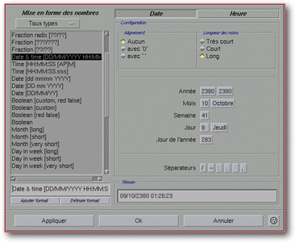

<!-- Documentation XQuad (c)1995-2000 AXENE contact axene@axene.org>
<html>

<head>
<title>Mise en forme des nombres</title>
</head>

<body BGCOLOR="#FFFFFF" BACKGROUND="Images/back.gif" TEXT="#000000">

<p ALIGN="right"> 
</p>

<p><br>
<br>
La boîte de dialogue 'Mise en forme des nombres' permet de définir précisément la
manière dont les nombres seront affichés dans les cellules de la feuille de calcul. Les
formats de nombres s'appliquent aussi bien aux valeurs numériques insérées manuellement
qu'aux résultats de formules renvoyant des valeurs numériques. Une cellule ne peut avoir
que 5 types de contenus distincts&nbsp;: être vide, être remplie par du texte, contenir
une formule renvoyant du texte, être remplie par une valeur numérique immédiate ou
contenir une formule renvoyant une valeur numérique. Les dates, heures, valeurs
booléennes, jours de la semaine et mois de l'année sont assimilés à des valeurs
numériques. <br>
<br>
</p>

<hr>

<p align="center"><br>
 <br>
<small><i>Photo d'écran&nbsp;: Boîte 'Mise en forme des nombres' </i></small></p>

<p><br>
</p>

<hr>

<p><br>
</p>

<h3>Partie gauche de la boîte de dialogue&nbsp;:</h3>

<ul>
  <li><a NAME="format_type_list">la liste déroulante de sélection de type de format </a><b>permet
    de ne voir dans la liste des formats de nombres que ceux du type voulu</b>. Les
    différents éléments de cette liste sont les suivants&nbsp;: <br>
    &nbsp;<ul>
      <li><i>&quot;Tous types&quot;</i>&nbsp;: affiche tous les formats de nombres disponibles
        dans la liste. <br>
        &nbsp;</li>
      <li><i>&quot;Nombres&quot;</i>&nbsp;: affiche les formats de nombres pour les valeurs
        numériques simples. <br>
        &nbsp;</li>
      <li><i>&quot;Unités&quot;</i>&nbsp;: affiche les formats de nombres qui permettent de faire
        précéder ou suivre un nombre par un identifiant d'unités (les formats monétaires, par
        exemple). <br>
        &nbsp;</li>
      <li><i>&quot;Scientifiques&quot;</i>&nbsp;: affiche les formats de nombres qui permettent
        d'afficher les valeurs numériques sous forme exponentielle (par exemple&nbsp;:
        1,124E+15). <br>
        &nbsp;</li>
      <li><i>&quot;Pourcentage&quot;</i>&nbsp;: affiche les formats de nombres qui permettent
        d'afficher des valeurs en pourcentage (nombre suivi du signe %). Les valeurs numériques
        affichées grâce à un format pourcentage sont automatiquement multipliées par 100 (0,15
        sera affiché&nbsp;: 15%). <br>
        &nbsp;</li>
      <li><i>&quot;Fractions&quot;</i>&nbsp;: affiche les formats de nombres qui permettent
        d'afficher les nombres sous forme de fraction (0,125 sera affiché&nbsp;: 1/8). <br>
        &nbsp;</li>
      <li><i>&quot;Booléens&quot;</i>&nbsp;: affiche les formats de nombres qui permettent
        d'afficher les nombres sous forme booléenne. Un nombre sous forme booléenne, ne peut
        prendre que deux valeurs: Faux, si le nombre est nul (= 0) ou Vrai, sinon. <br>
        &nbsp;</li>
      <li><i>&quot;Jours de la semaine&quot;</i>&nbsp;: affiche les formats de nombres qui
        permettent d'afficher les noms de jours de la semaine (&quot;Lundi&quot; par exemple). Une
        valeur de 0 correspond au Dimanche, 1 au Lundi... <br>
        &nbsp;</li>
      <li><i>&quot;Mois de l'année&quot;</i>&nbsp;: affiche les formats de nombres qui permettent
        d'afficher les noms des mois de l'année (&quot;Janvier&quot;, par exemple). Une valeur de
        1 correspond à Janvier, 2 à Février... <br>
        &nbsp;</li>
      <li><i>&quot;Heures&quot;</i>&nbsp;: affiche les formats de nombres qui permettent
        d'afficher une heure (14:21:12 PM, par exemple). Une heure est gardée sur la partie
        fractionnelle d'un nombre&nbsp;: un millième de seconde vaut 1/(24*60*60*1000), une
        minute vaut 1/(24*60) et une heure vaut 1/24. <br>
        &nbsp;</li>
      <li><i>&quot;Dates&quot;</i>&nbsp;: affiche les formats de nombres qui permettent d'afficher
        une date (25/12/1995, par exemple). Une date est gardée sur la partie entière d'un
        nombre et équivaut au nombre de jours depuis le 1<sup>er</sup> janvier 2000 (les dates
        actuelles sont en négatif). <br>
        &nbsp;</li>
      <li><i>&quot;Dates + Heures&quot;</i>&nbsp;: affiche les formats de nombres qui permettent
        d'afficher une date suivie d'une heure (25/12/1995 14:21:12 PM, par exemple). <br>
        &nbsp;</li>
    </ul>
  </li>
  <li><a NAME="format_list">la liste des formats de nombres </a><b>indique les formats déjà
    définis</b>. Lorsque l'on sélectionne un des formats de la liste, ses caractéristiques
    apparaissent à droite. Il est possible de sélectionner plusieurs éléments dans la
    liste grâce à l'utilisation de la touche Ctrl, lorsque le filtre de format n'est pas <i>&quot;Tous
    types&quot;</i>. <br>
    &nbsp;</li>
  <li><a NAME="format_textfield">le champ texte juste en dessous de la liste permet de </a><b>changer
    le nom du format de nombres</b> sélectionné. <br>
    &nbsp;</li>
  <li><a NAME="button_new">le bouton </a><i>&quot;Ajouter format&quot;</i> permet de <b>créer
    un nouveau format de nombres</b>. Celui-ci aura par défaut les mêmes caractéristiques
    que le format sélectionné et le même nom augmenté d'un numéro. <br>
    &nbsp;</li>
  <li><a NAME="button_del">le bouton </a><i>&quot;Détruire format&quot;</i> permet de <b>détruire
    un format de nombres</b>. Il est impossible de détruire tous les formats (il doit en
    rester au moins un par type) et il n'est pas possible de détruire un format utilisé. <br>
    &nbsp;</li>
</ul>

<p><br>
</p>

<h3>Partie droite de la boîte de dialogue&nbsp;: </h3>

<p>La partie droite de la boîte permet de voir et de changer les caractéristiques du
format de nombres sélectionné dans la liste des formats. Comme chaque type de format a
ses caractéristiques propres, cette partie droite de la boîte de dialogue est très
différente en fonction des cas. Elle est toujours composée de haut en bas par&nbsp;: 

<ul>
  <li><a NAME="button_bar">une barre horizontale de boutons poussoirs qui </a><b>font varier
    le contenu de la section</b> <i>&quot;Configuration&quot;</i>. Le nombre et les noms des
    boutons de cette barre changent en fonction du type du format de nombres sélectionné. <br>
    &nbsp;</li>
  <li><a NAME="setup_frame">la section </a><i>&quot;Configuration&quot;</i> <b>permet de voir
    et de changer certaines caractéristiques</b> du format de nombres sélectionné. Le
    contenu de cette section change en fonction du bouton sélectionné de la barre
    horizontale ci-dessus. <br>
    &nbsp;</li>
  <li><a NAME="preview_frame">la section </a><i>&quot;Témoin&quot;</i> contient un champ
    texte non éditable. Celui-ci <b>donne un aperçu de l'affichage d'un nombre</b> avec le
    format de nombres sélectionné. Le nombre témoin est soit une constante prédéfinie,
    soit la valeur de la cellule active de la feuille de calcul. <br>
    &nbsp;</li>
</ul>

<p>Lorsque le format de nombres sélectionné est du type&nbsp;: 

<ul>
  <li><i>&quot;Nombres&quot;</i>, les boutons de la barre horizontale sont <a
    HREF="Box_NumFmt_Display.html#bnf_display_1"><i>&quot;Affichage&quot;</i></a> et <a
    HREF="Box_NumFmt_Colors.html#bnf_colors_1"><i>&quot;Couleurs&quot;</i></a>. <br>
    &nbsp;</li>
  <li><i>&quot;Unités&quot;</i>, les boutons de la barre horizontale sont <a
    HREF="Box_NumFmt_UnitStyleText.html#bnf_unit"><i>&quot;Unité&quot;</i></a>, <a
    HREF="Box_NumFmt_Display.html#bnf_display_1"><i>&quot;Affichage&quot;</i></a> et <a
    HREF="Box_NumFmt_Colors.html#bnf_colors_1"><i>&quot;Couleurs&quot;</i></a>. <br>
    &nbsp;</li>
  <li><i>&quot;Scientifiques&quot;</i>, les boutons de la barre horizontale sont <a
    HREF="Box_NumFmt_Display.html#bnf_display_2"><i>&quot;Affichage&quot;</i></a>, <a
    HREF="Box_NumFmt_UnitStyleText.html#bnf_unit"><i>&quot;Unité&quot;</i></a> et <a
    HREF="Box_NumFmt_Colors.html#bnf_colors_1"><i>&quot;Couleurs&quot;</i></a>. <br>
    &nbsp;</li>
  <li><i>&quot;Pourcentages&quot;</i>, les boutons de la barre horizontale sont <a
    HREF="Box_NumFmt_Display.html#bnf_display_1"><i>&quot;Affichage&quot;</i></a> et <a
    HREF="Box_NumFmt_Colors.html#bnf_colors_1"><i>&quot;Couleurs&quot;</i></a>. <br>
    &nbsp;</li>
  <li><i>&quot;Fractions&quot;</i>, les boutons de la barre horizontale sont <a
    HREF="Box_NumFmt_Display.html#bnf_display_3"><i>&quot;Affichage&quot;</i></a>, <a
    HREF="Box_NumFmt_UnitStyleText.html#bnf_unit"><i>&quot;Unité&quot;</i></a> et <a
    HREF="Box_NumFmt_Colors.html#bnf_colors_1"><i>&quot;Couleurs&quot;</i></a>. <br>
    &nbsp;</li>
  <li><i>&quot;Booléens&quot;</i>, les boutons de la barre horizontale sont <a
    HREF="Box_NumFmt_UnitStyleText.html#bnf_text"><i>&quot;Texte&quot;</i></a> et <a
    HREF="Box_NumFmt_Colors.html#bnf_colors_2"><i>&quot;Couleurs&quot;</i></a>. <br>
    &nbsp;</li>
  <li><i>&quot;Jours de la semaine&quot;</i>, le bouton de la barre horizontale est <a
    HREF="Box_NumFmt_UnitStyleText.html#bnf_style"><i>&quot;Style&quot;</i></a>. <br>
    &nbsp;</li>
  <li><i>&quot;Mois dans l'année&quot;</i>, le bouton de la barre horizontale est <a
    HREF="Box_NumFmt_UnitStyleText.html#bnf_style"><i>&quot;Style&quot;</i></a>. <br>
    &nbsp;</li>
  <li><i>&quot;Heures&quot;</i>, le bouton de la barre horizontale est <a
    HREF="Box_NumFmt_HourDate.html#bnf_hour"><i>&quot;Heure&quot;</i></a>. <br>
    &nbsp;</li>
  <li><i>&quot;Dates&quot;</i>, le bouton de la barre horizontale est <a
    HREF="Box_NumFmt_HourDate.html#bnf_date"><i>&quot;Date&quot;</i></a>. <br>
    &nbsp;</li>
  <li><i>&quot;Dates + Heures&quot;</i>, les boutons de la barre horizontale sont <a
    HREF="Box_NumFmt_HourDate.html#bnf_date"><i>&quot;Date&quot;</i></a> et <a
    HREF="Box_NumFmt_HourDate.html#bnf_hour"><i>&quot;Heure&quot;</i></a>. <br>
    &nbsp;</li>
</ul>

<p><b>Remarque</b>&nbsp;: lorsqu'un des boutons <i>&quot;Date&quot;</i> ou <i>&quot;Heure&quot;</i>
est sélectionné, le champ texte de la section témoin peut être édité manuellement. </p>

<p><br>
</p>

<h3>Partie inférieure de la boîte de dialogue&nbsp;: </h3>

<ul>
  <li><a NAME="button_apply"><i>&quot;Appliquer&quot;</i> accepte les modifications apportées
    à la liste des formats et <b>applique le dernier format de nombres sélectionné aux
    régions de cellule sélectionnée</b>. La boîte est ensuite fermée. </a><br>
    &nbsp;</li>
  <li><a NAME="button_ok"><i>&quot;Ok&quot;</i> <b>accepte toutes les modifications apportées
    à la liste des formats de nombres </b>et ferme la boîte. Toutes les valeurs numériques
    utilisant un des formats modifiés seront ré-affichées automatiquement. </a><br>
    &nbsp;</li>
  <li><a NAME="button_cancel"><i>&quot;Annuler&quot;</i> <b>annule toutes les opérations sur
    la liste des formats</b> et ferme la boîte. </a><br>
    &nbsp;</li>
</ul>

<p><br>
</p>

<hr>

<p ALIGN="right"></p>
</body>
</html>
